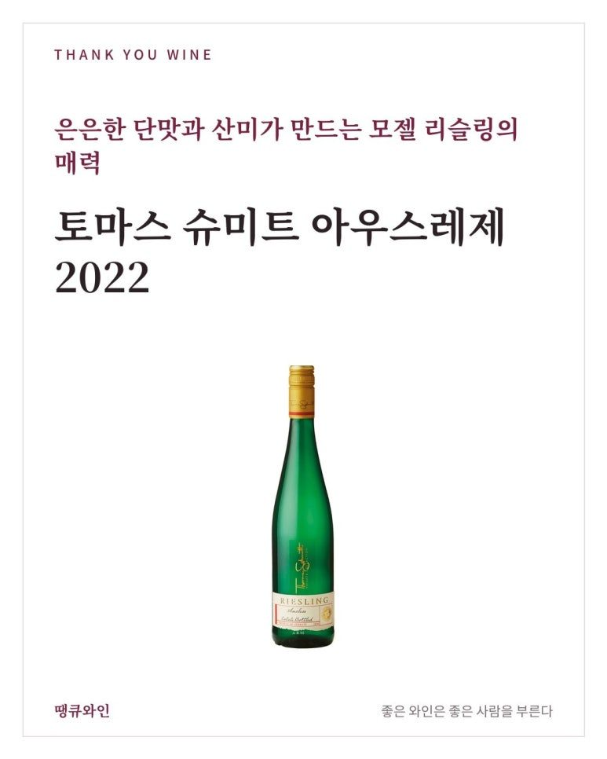
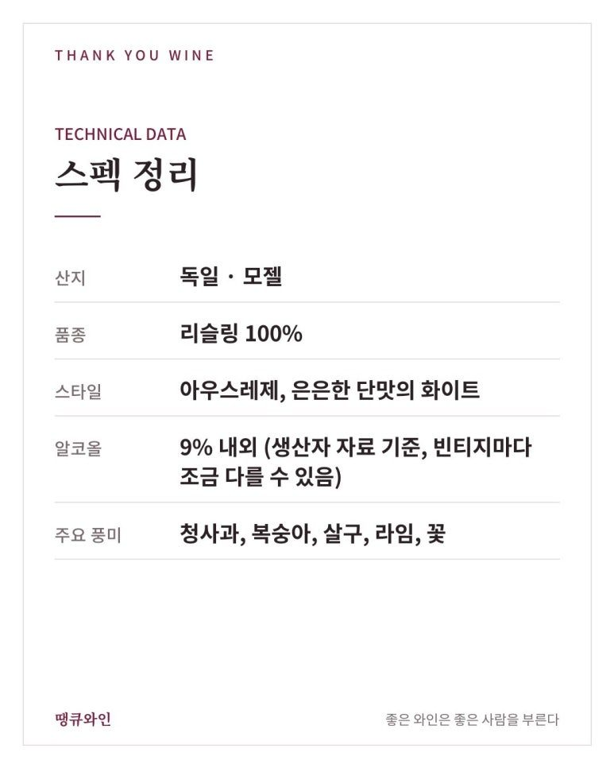
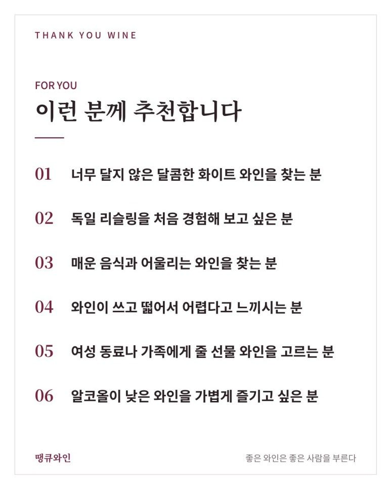
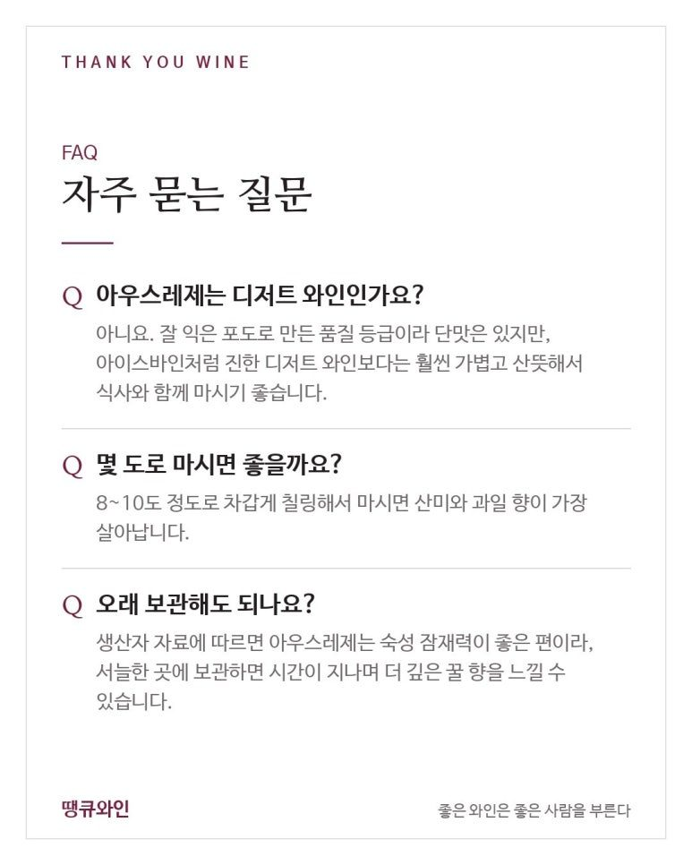

토마스 슈미트 아우스레제 2022
은은한 단맛과 산미가 만드는 모젤 리슬링의 매력
토마스 슈미트 아우스레제 2022는 은은한 단맛과 생생한 산미가 함께 어우러지는 모젤 리슬링 아우스레제예요.
독일 화이트 와인을 고르다 보면 라벨에서 낯선 단어를 자주 만나게 됩니다.
카비넷, 슈페트레제, 그리고 아우스레제.
“아우스레제는 달다는 뜻인가? 디저트 와인이랑은 뭐가 다르지?”
이런 궁금증이 한 번쯤 생기셨다면, 오늘 소개할 와인이 좋은 답이 될 것 같습니다.
토마스 슈미트 프라이빗 컬렉션 아우스레제 2022는 독일 모젤(Mosel)의 리슬링으로 만든 아우스레제로, 은은한 단맛과 생생한 산미가 함께 어우러지는 스타일입니다.
무엇보다 중요한 포인트는 바로,
은은한 단맛과 생생한 산미가 함께 어우러지는 모젤 리슬링 아우스레제라는 것.

한눈에 보는 토마스 슈미트 아우스레제
- 생산자
- 슈미트 죄네(Schmitt Söhne), 모젤 롱기히(Longuich)
- 산지
- 독일 모젤
- 품종
- 리슬링(Riesling) 100%
- 스타일
- 은은한 단맛의 화이트 와인(아우스레제)
- 이런 분께
- 너무 달지 않은 달콤한 화이트 와인을 찾는 분
- 구매처
- 성수동 땡큐와인 매장 · 카톡으로 입고·가격 1:1 안내
농익은 과실 향 + 은은한 단맛 + 풍부한 바디감
을 함께 느낄 수 있는 것이 특징입니다.
다만 아이스바인이나 트로켄베렌아우스레제처럼 꿀처럼 진한 디저트 와인과는 다릅니다.
식사와 함께 마셔도 부담이 없는, 달콤하지만 산뜻한 스타일이라고 이해하시면 좋습니다.
왜 모젤 리슬링은 단맛이 잘 어울릴까?
모젤은 독일에서도 가장 서늘한 산지 중 하나라, 리슬링의 산도가 아주 높게 유지되기 때문입니다.
생산자 설명에 따르면 모젤의 가파른 경사면에서 자란 리슬링은 산미가 매우 강하게 살아 있어서, 약간의 잔당을 남겨 두면 단맛과 산미가 서로 균형을 이룬다고 합니다.
최근에는 드라이한 와인이 유행하면서 이런 스타일이 조금 덜 주목받기도 했지만,
슈미트 가족은 이 균형이야말로 모젤의 떼루아를 가장 잘 보여 준다고 믿고 전통 방식을 지켜 오고 있습니다.
토마스 슈미트 아우스레제 2022 테이스팅 노트
잔에 따르면 맑고 밝은 연노란빛이 먼저 눈에 들어옵니다.
향에서는 청사과, 복숭아, 살구 같은 과일 향에 꽃향기가 은은하게 더해집니다.
입에 머금으면 잘 익은 과일의 단맛이 부드럽게 퍼지고, 곧바로 리슬링 특유의 상큼한 산미가 따라와 입안을 깔끔하게 정리해 줍니다.
마셔 본 분들이 남긴 평을 보면 파인애플, 키위, 라임 같은 열대 과일 풍미와 모젤 특유의 미네랄 느낌을 이야기하는 경우가 많습니다.
알코올이 낮은 편이라 가볍게 한 잔씩 즐기기에도 좋습니다.
THOMAS SCHMITT PRIVATE COLLECTION AUSLESE 2022
- 산지: 독일 · 모젤
- 품종: 리슬링 100%
- 스타일: 아우스레제, 은은한 단맛의 화이트
- 알코올: 9% 내외 (생산자 자료 기준, 빈티지마다 조금 다를 수 있음)
- 바디 3/5 · 산도 5/5 · 당도 미디엄 스위트 · 과실 4/5
- 주요 풍미: 청사과, 복숭아, 살구, 라임, 꽃

토마스 슈미트 아우스레제와 어울리는 음식은?
생산자는 너무 달지 않은 과일 디저트, 단맛이 살짝 있는 요리, 향신료가 강한 아시아 음식과의 페어링을 추천하고 있습니다.
땡큐와인에서 추천한다면 이런 메뉴와 함께 즐겨보겠습니다.
- 아시아 음식: 팟타이, 똠얌꿍, 매콤한 닭 요리
- 한식: 떡볶이, 양념치킨, 매운 갈비찜
- 해산물: 대하 구이, 꽃게찜
- 치즈: 블루치즈, 고트 치즈
- 디저트: 과일 타르트, 가을 배, 홍시
특히 매콤한 한식과의 조합을 추천드립니다.
산미와 단맛이 매운맛을 부드럽게 감싸 줘서, 떡볶이나 양념치킨과 함께하면 생각보다 훨씬 잘 어울리거든요.
제철을 맞은 대하 구이나 꽃게찜과 함께해도 해산물의 단맛을 잘 살려 줍니다.
토마스 슈미트 아우스레제, 이런 분께 추천합니다
- 너무 달지 않은 달콤한 화이트 와인을 찾는 분
- 독일 리슬링을 처음 경험해 보고 싶은 분
- 매운 음식과 어울리는 와인을 찾는 분
- 와인이 쓰고 떫어서 어렵다고 느끼시는 분
- 여성 동료나 가족에게 줄 선물 와인을 고르는 분
- 알코올이 낮은 와인을 가볍게 즐기고 싶은 분

특히 “나는 달콤한 와인이 좋은데 디저트 와인처럼 너무 단 건 싫어”라고 하시는 분들에게 추천하기 좋은 스타일입니다.

자주 묻는 질문
아우스레제는 디저트 와인인가요?
아니요. 잘 익은 포도로 만든 품질 등급이라 단맛은 있지만, 아이스바인처럼 진한 디저트 와인보다는 훨씬 가볍고 산뜻해서 식사와 함께 마시기 좋습니다.
몇 도로 마시면 좋을까요?
8~10도 정도로 차갑게 칠링해서 마시면 산미와 과일 향이 가장 살아납니다.
오래 보관해도 되나요?
생산자 자료에 따르면 아우스레제는 숙성 잠재력이 좋은 편이라, 서늘한 곳에 보관하면 시간이 지나며 더 깊은 꿀 향을 느낄 수 있습니다.
결국 이 와인의 매력은 ‘단맛과 산미의 균형’입니다
토마스 슈미트 아우스레제 2022는 100년 넘게 모젤에서 리슬링을 만들어 온 가족이 전통 방식 그대로 담아낸 와인입니다. 그래서 저는 이 와인을 이라고 소개하고 싶습니다. 이번 기회에 독일 리슬링의 산뜻한 단맛을 한 번 제대로 느껴보시길 추천합니다.
구매 전에 자주 묻는 질문
토마스 슈미트 아우스레제 2022는 어디서 살 수 있나요?
서울 성수동 땡큐와인 매장(성동구 성덕정길 109 2층)에서 구매할 수 있어요. 카카오톡으로 와인 이름을 보내 주시면 입고 상황과 가격을 1:1로 알려 드리고, 매장에서 바로 가져가시거나 미리 주문해 두실 수 있어요.
토마스 슈미트 아우스레제 2022 가격은 얼마인가요?
수입사 행사와 입고 시기에 따라 가격이 자주 바뀌어서 사이트에는 적지 않고, 카카오톡으로 1:1 안내해 드려요. 모임·선물용 수량 주문은 세금계산서 발행도 돼요.
이 글은 땡큐와인 네이버 블로그에 먼저 올린 글이에요.